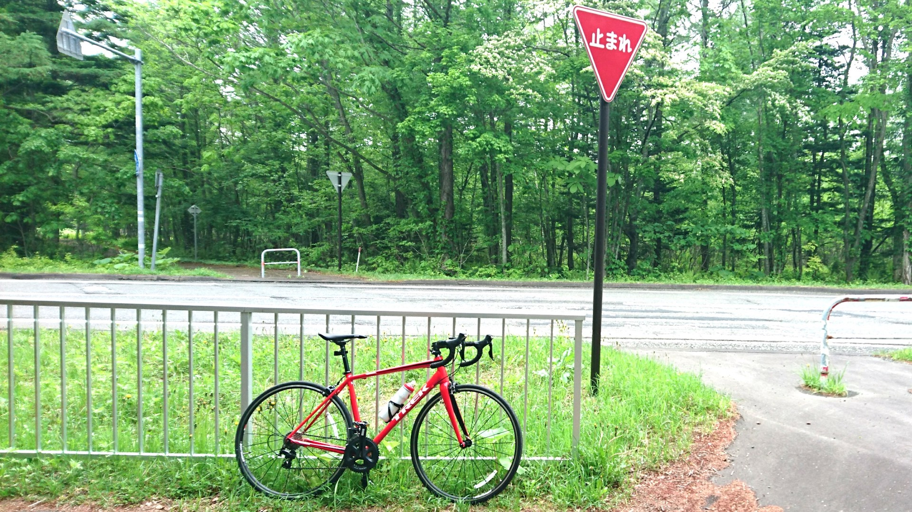

自己紹介
札幌で小中 → NITTC（情報工学科） → NITTC（専攻科)
研究では脳波計測とその解析やっています。
計測で使うツールはUnityやProcessing、脳波の解析にはRとPython
興味
QoLをほんの少しだけでも向上させるものを作りたい。
研究で機械学習、Echo dotで自然言語処理に興味を持つ。
好きな作品はクロノ・トリガーやロックマンエグゼ
制作ブツ
日報に書いた翌日のタスクをTodoistへ登録してくれるモノ
暗号化されてるPARのコードを復号化するモノ
HOME Wi-fiの通信量を可視化してくれるモノ
プログラミング
よく触れる言語は主に研究でR、趣味でPython。
触った事があるのは Common Lisp/C/Java/PHP など。
趣味その他
趣味は自転車乗ったり電子ピアノ弾いたり。
自転車はGIANTのEscape R3 と Trek Èmonda Alr5
